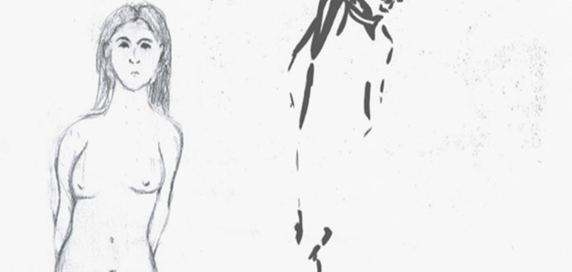
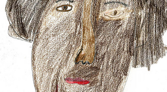

Concept
Ontdek binnenkort de verhalen van geïnterneerden in immersive experience installation!
In België belanden mensen met psychische problemen nog steeds in de gevangenis, vaak zonder de juiste zorg. Tabula Captiva brengt hun verhalen tot leven met licht, geluid en interactieve objecten in een nagebouwde cel. Een beklijvende ervaring die je uitnodigt om anders te kijken naar opsluiting, zorg en menselijkheid in de gevangenis.

Stories from the inside
More Stories
Het is altijd gezellig om samen te eten. En omdat hij kookt, doe ik achteraf de afwas, dan zijn de taken eerlijk verdeeld. Ja zo heel dat kook gedeelte, zorgt wel echt voor een huiselijke sfeer. Zo vergeet ge toch efkes dat ge in den bak zit.
